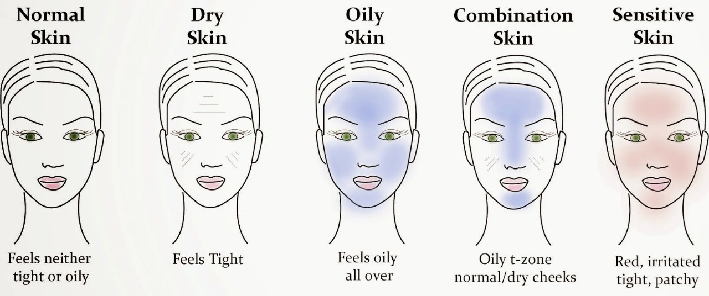

Radiant Skin

This skin type is well-balanced and neither too dry nor too oily. It has a smooth texture, small pores, and a healthy-looking complexion.
This skin type produces less sebum than others. Dry skin can feel tight, dull, and scaly, and may itch, sting, or burn.
This skin type produces too much sebum, leading to enlarged pores, a shiny complexion, and redness.
This skin type has oily areas and dry areas on different parts of the face.
This skin type becomes irritated or inflamed easily. People with dry or oily skin can also have sensitive skin.